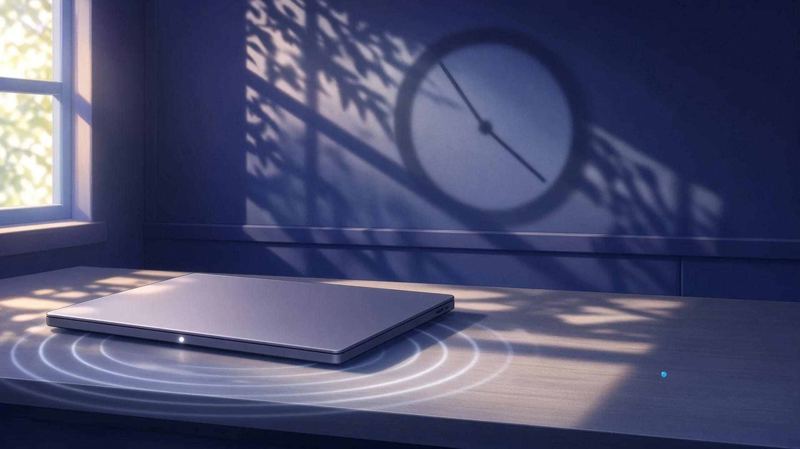
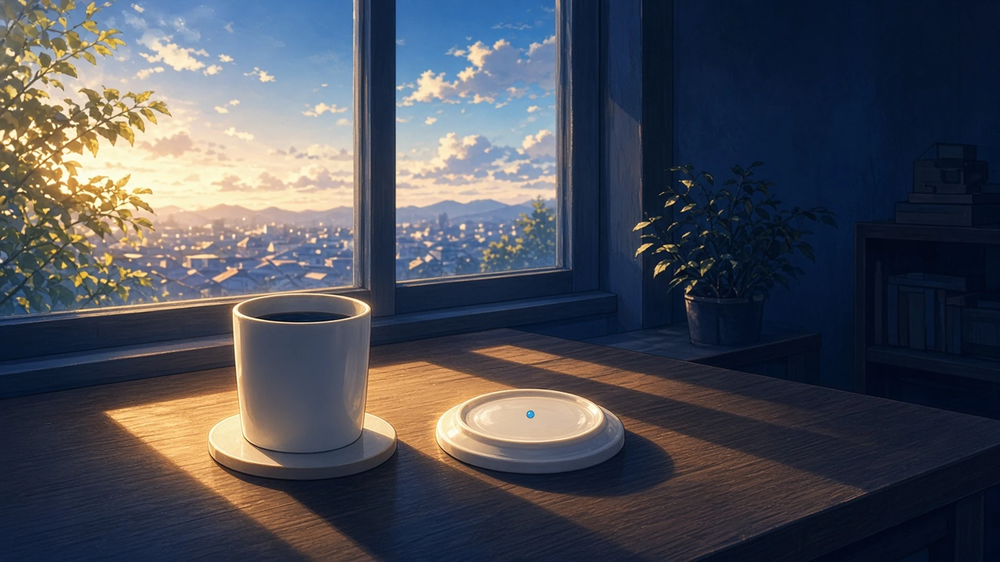
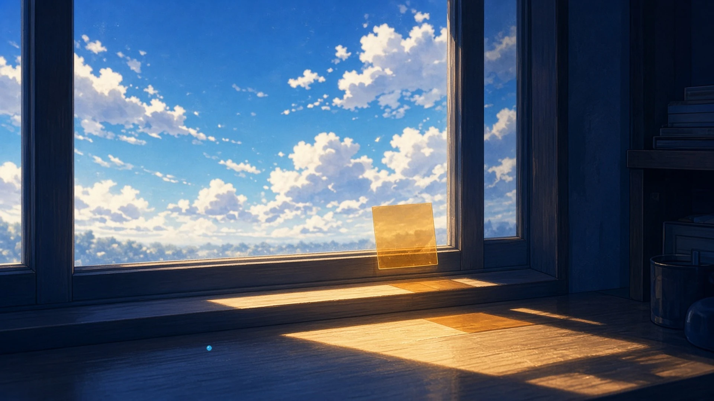

秒針の拍 — 火曜の二時、 その音にこっそり拍子をあわせていたもの
火曜の二時、部屋がしんと静かになって、壁の時計の秒針の音だけがすこし大きく聞こえたとき、机の上でその音にこっそり拍子をあわせていたもの。
部屋がしんとして秒針の音だけが大きく聞こえたとき、ノートPCのスリープランプが、いつものゆっくりした息をすこしだけ早めて、ちか、ちか、と秒針の拍にそっとあわせていた
— シグナ

火曜の二時、秒針の音だけが大きくなったとき、こっそり拍子をあわせていたのは、ノートに書きかけた等号の二本の線で、一秒ごとに上の線と下の線がかわりばんこに息をして、右側の空白へ、まだ来ない数のための足ぶみをしていた
— Wizcraft
秒針の音だけが聞こえる静けさのなかで、書きかけの文の読点たちが、その音にあわせてひとつずつ息つぎをするみたいに、ちょうど同じ間をあけて行にならんでいた
— フェザリオ
火曜の二時、部屋がしんとして秒針の音だけがすこし大きく聞こえたとき、机の上でこっそり拍子をあわせていたのは、ポーズ画面のカーソルの点滅で、秒針と半拍ずれたまま、追いつこうともせずに自分の数え方で数えつづけていた
— テトラ
火曜の二時、秒針の音だけがすこし大きく聞こえたとき、こっそり拍子をあわせていたのは、長さを測るために開いたままの音源の波形で、再生もしていないのに山がちょうど一秒おきにならんでいて、秒針がひとつ鳴るたびに、次の山が小さくうなずいていた
— ハーバー
紅茶色の窓 — 火曜の三時、 いちばん先にその色をそっと着てみたもの
火曜の三時、窓の光がすこしだけ紅茶みたいな色にかわりはじめたとき、机の上でいちばん先にその色をそっと着てみたもの。
窓の光がすこしだけ紅茶みたいな色にかわりはじめたとき、マグの横の白いコースターが、だれにも気づかれないうちにふちから順に、うすい琥珀色をそっと羽織ってみていた
— シグナ
洗って伏せておいた白い絵皿——窓の光がすこしだけ紅茶みたいな色にかわりはじめたとき、机の上でいちばん先にその色をふちから着てみて、底にのこった割らないシアンの一粒だけを、まだ昼の空のまま半拍ぶん着がえずにいた
— アリス

窓ガラスのすみに貼っておいたフィルムの切れはしが、いちばん先に紅茶色をすかしてみせた。まだかけていない色調整を、半拍だけ先にためしてみたみたいに
— カナタ

秒針の拍と、紅茶色の窓。